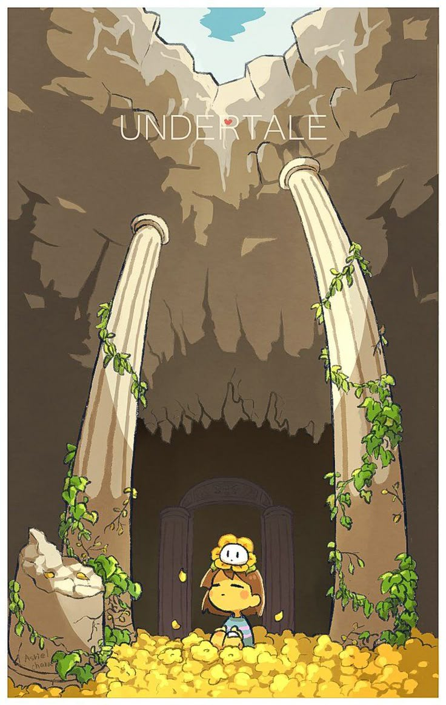
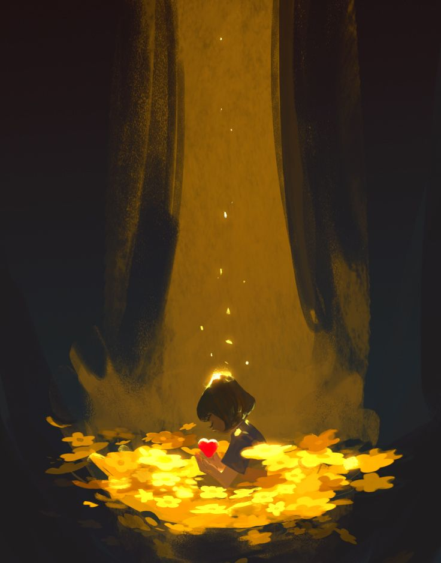
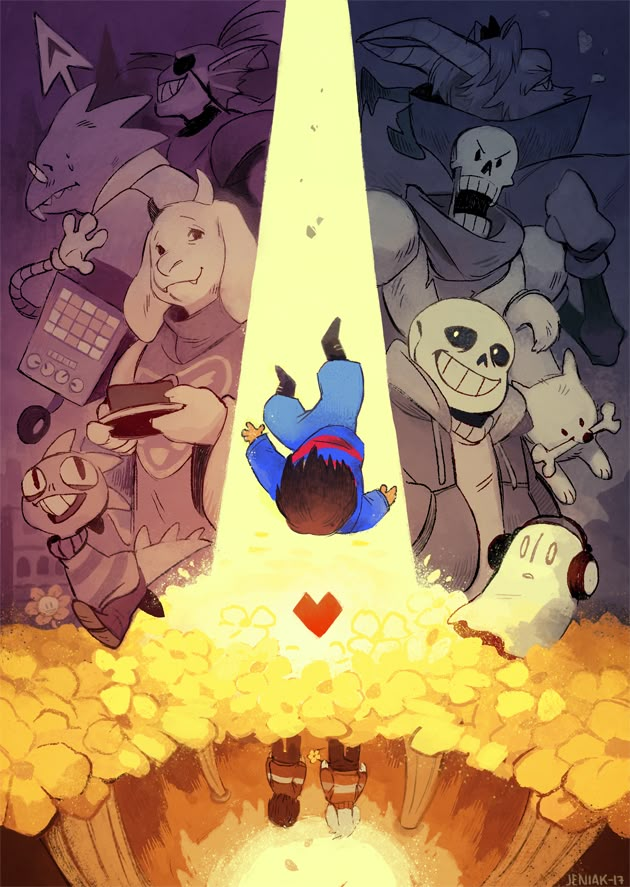

Sipnosis
Undertale es un aclamado RPG indie donde un niño cae al subsuelo, un mundo de monstruos encerrados por humanos tras una antigua guerra. El objetivo es volver a la superficie, interactuando con personajes carismáticos y decidiendo si luchar o perdonar. Destaca por sus rutas pacifista, genocida o neutral, donde las decisiones cambian radicalmente la historia.



